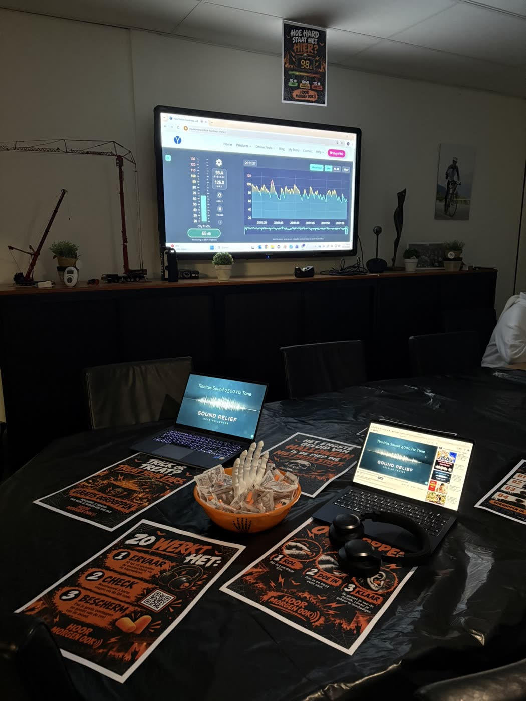
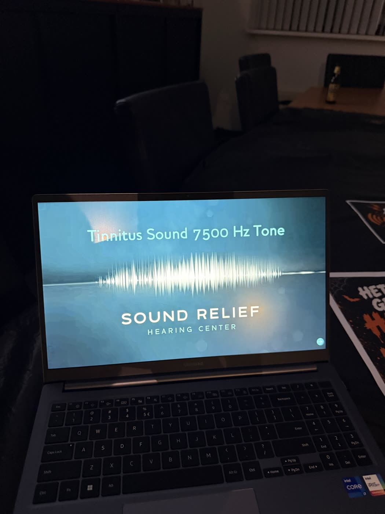
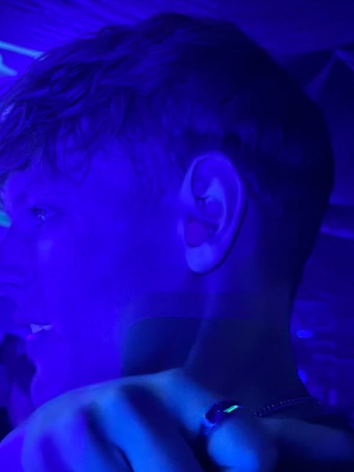
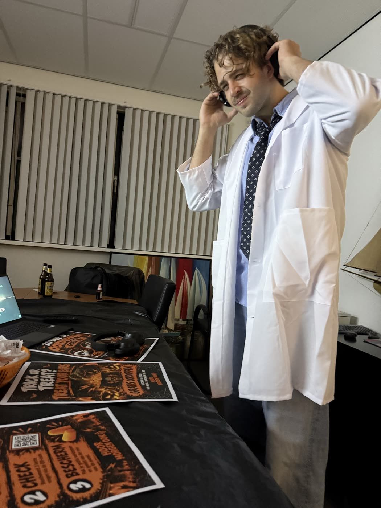

< 1 op 3
jongeren in Nederland draagt oordoppen op plekken met harde muziek.
De Zeeuw e.a. (2026), 1.637 jongeren van 12–25 jaarEen campagne van HvA-studenten
Na een feest suizen je oren. Meestal gaat dat over. Maar de schade in je binnenoor kan blijvend zijn, ook als je niets meer hoort.
Dit is hoe tinnitus voor veel mensen klinkt. Nu stop je hem met één klik. Met tinnitus kan dat niet.
55 mensen beschermen hun oren al. Jij ook? →Hoe hard is hard?
De Nederlandse afspraak voor feesten en festivals is gemiddeld maximaal 103 dB, gemeten over 15 minuten. De WHO adviseert 100 dB. Elke 3 dB erbij is twee keer zoveel geluidsenergie voor je oren.
Gemeten met een telefoon-app, dus indicatief. Bronnen: Convenant Preventie Gehoorschade 2024–2027, WHO (2022).
Het probleem
jongeren in Nederland draagt oordoppen op plekken met harde muziek.
De Zeeuw e.a. (2026), 1.637 jongeren van 12–25 jaarLawaaischade in je binnenoor herstelt niet. Ook als de piep weggaat, kan er al schade zijn.
Gezondheidsraad (2024)van de jongeren die wij spraken, heeft wel eigen oordoppen. Vergeten is de grootste reden om ze niet te dragen. Het probleem is niet hebben, maar meenemen.
Eigen enquête Hoor Morgen Ook, 46 jongerenWat wij deden
15 seconden de tinnitusklank. Iedereen vond hem irritant. Juist dat opende het gesprek.
Een paar vragen over hoe jij luistert en uitgaat.
Gratis oordoppen mee, met uitleg. Gesponsord door onze partner STFU.




Zo doe je het
Tips gebaseerd op I Love My Ears (VeiligheidNL). Oordoppen nodig? Je haalt ze bij de drogist of bestelt ze online.
De belofte
Inclusief de 55 feestgangers van onze actie op 17 oktober.
Spreek het af met je vrienden: wie neemt de oordoppen mee?
Admin